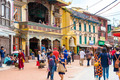
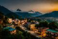

Multimédia
Fotografias
 Video
Poema
Nas montanhas altas, Katmandu floresce,
Entre rios sagrados, a cidade amanhece.
Templos de sonhos, em névoas de paz,
Onde o tempo é lento e a alma se faz.
No vale escondido, histórias a voar,
Sob os Himalaias, perto do céu e do mar.